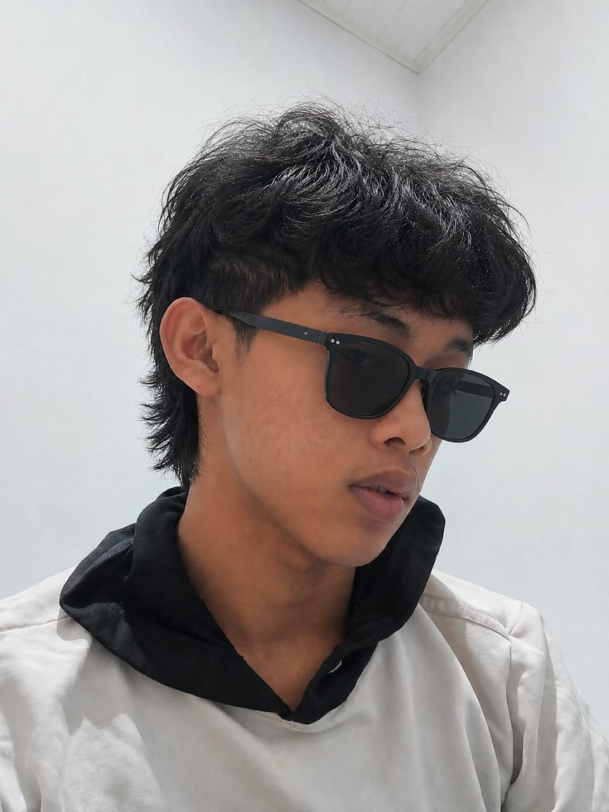

Erwin Juliandi Manurung
Aspiring AI Engineer & Full-Stack Developer
Tentang Saya
Mahasiswa Informatika dengan minat besar pada pengembangan web dan penerapan kecerdasan buatan untuk masalah nyata. Terbiasa bekerja dengan HTML, CSS, dan JavaScript, serta sedang memperdalam integrasi model AI ke dalam aplikasi web. Senang belajar hal baru dan bekerja dalam tim lintas disiplin.
Pengalaman
Frontend Developer Intern — Studi Independen
Feb 2026 — Jun 2026
Membangun antarmuka landing page dan dashboard internal menggunakan HTML, CSS, dan Bootstrap; berkolaborasi dengan tim backend melalui Git.
Koordinator Divisi IT — Himpunan Mahasiswa Informatika
Ags 2025 — Sekarang
Mengelola situs organisasi dan mendampingi anggota baru belajar dasar pengembangan web.
Proyek & Portofolio
Pendidikan
S1 Informatika
Universitas Del · 2024 — sekarang
Keahlian
Sertifikat
- Responsive Web Design — freeCodeCamp (2025)
- Dasar-dasar Kecerdasan Buatan — Coursera (2026)